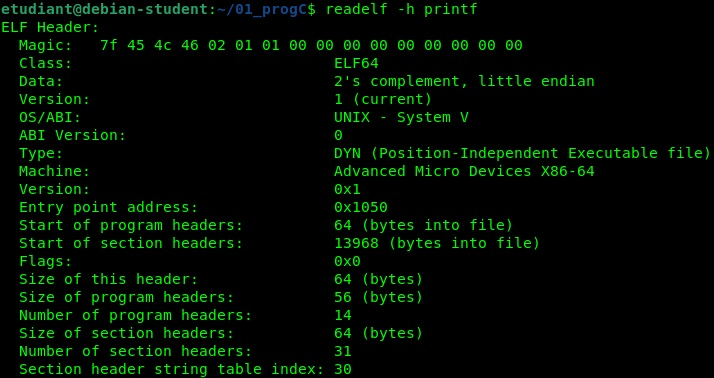
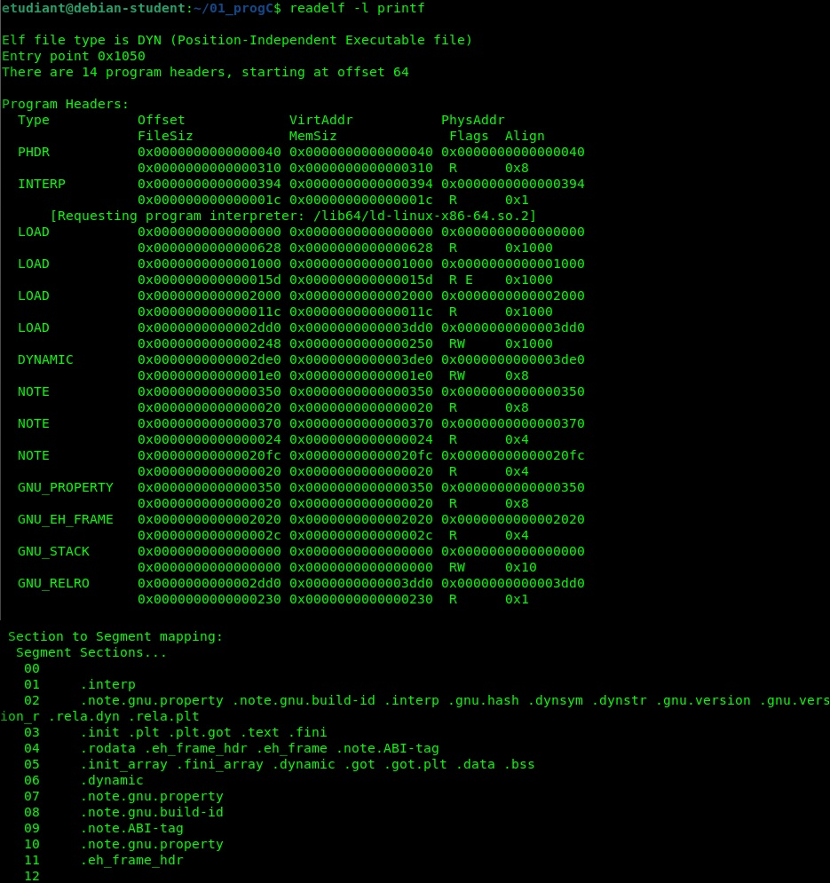

L'utilisation de la commande readelf -h sur un binaire (ici l'exécutable printf) permet d'extraire les métadonnées de structure lues par le noyau lors de l'appel système exec.
ELF : Executable and Linkable Format (Format d'exécutable et de liaison).

7f 45 4c 46 décrivent la signature du fichier (les caractères ASCII pour .ELF). Elle permet au noyau de valider instantanément le format du fichier binaire.
ELF64 indique une architecture 64 bits native. Le codage en little endian spécifie que l'octet de poids faible est stocké en premier en mémoire (standard des architectures x86_64).
DYN (Position-Independent Executable). Cela signifie que le binaire supporte l'ASLR (Address Space Layout Randomization) : le noyau peut charger ses régions à des adresses virtuelles aléatoires à chaque exécution pour des raisons de sécurité.
0x1050. Il s'agit de l'offset de la première instruction exécutée par le processeur (la routine système _start), calculé relativement à l'adresse de base injectée en mémoire.
14 en-têtes de programme. Ce sont ces structures spécifiques qui dictent au noyau comment segmenter le fichier pour instancier et mapper les différentes régions mémoire du processus.
Rappel de cours : Les en-têtes de programme décrivent les segments (la vue d'exécution du noyau), tandis que les en-têtes de section décrivent les sections (la vue de liaison pour le compilateur).
La commande readelf -l permet d'observer la vue d'exécution (Execution View) du fichier binaire. Elle liste les segments que le chargeur du noyau (kernel loader) va directement projeter (mapper) dans l'espace d'adressage virtuel du processus.

/lib64/ld-linux-x86-64.so.2. C'est le lieur dynamique (dynamic linker) chargé de trouver et de charger en mémoire les bibliothèques partagées (comme la libc pour le printf) au démarrage du programme.
L'analyse des drapeaux (Flags) montre une stricte séparation des privilèges en mémoire pour des raisons de sécurité :
| Segment | Drapeaux (Flags) | Rôle & Sections incluses |
|---|---|---|
| LOAD 0 | R (Read Only) |
Contient les métadonnées initiales, la table des symboles dynamiques et les structures de relocalisation. |
| LOAD 1 | R E (Read & Execute) |
Le segment Text (Code) : Reçoit les sections .text (le code machine de tes fonctions) et .init. Il est exécutable mais protégé contre l'écriture pour éviter qu'un exploit ne modifie le code à la volée. |
| LOAD 2 | R (Read Only) |
Le segment Data non modifiable : Reçoit notamment la section .rodata (Read-Only Data) où sont stockées tes chaînes de caractères littérales (ex: le texte à l'intérieur de tes printf("...")). |
| LOAD 3 | R W (Read & Write) |
Le segment Data modifiable : Reçoit les sections .data (variables globales initialisées) et .bss (variables globales non initialisées). Il autorise l'écriture mais interdit strictement l'exécution (non exécutable). |
RW (lecture/écriture seule, pas de E). Cela signifie que la Pile (Stack) du processus n'est pas exécutable, bloquant ainsi les attaques classiques par injection de code de type buffer overflow.
.got).
Résumé de la correspondance Sections ➔ Segments : La seconde partie de la commande (Section to Segment mapping) prouve que le compilateur regroupe des dizaines de sections de code ou de données similaires au sein d'un seul et unique segment logique afin de faciliter le travail de mapping du noyau Linux.